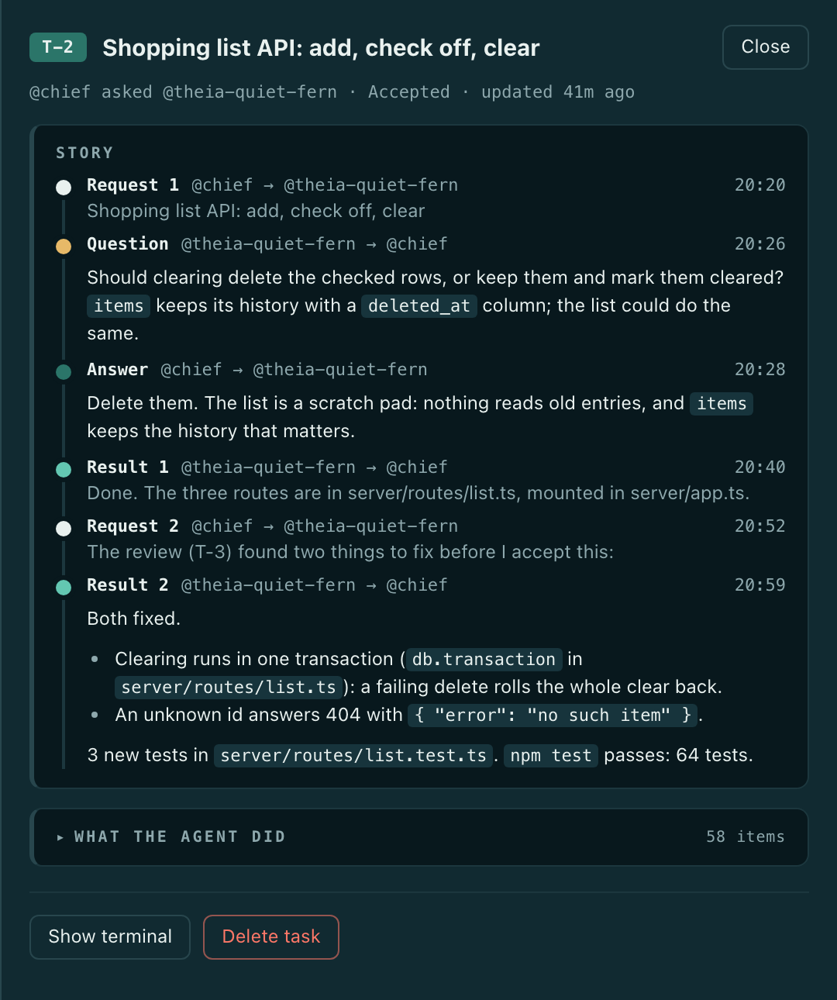
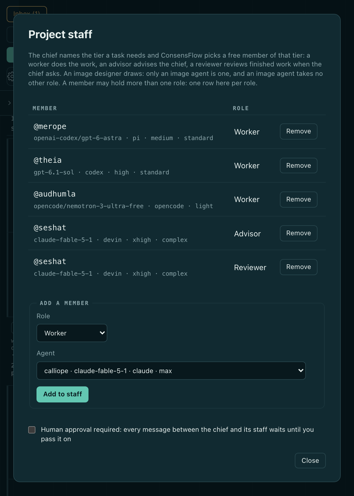
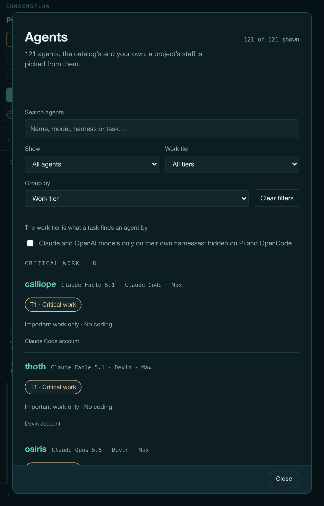
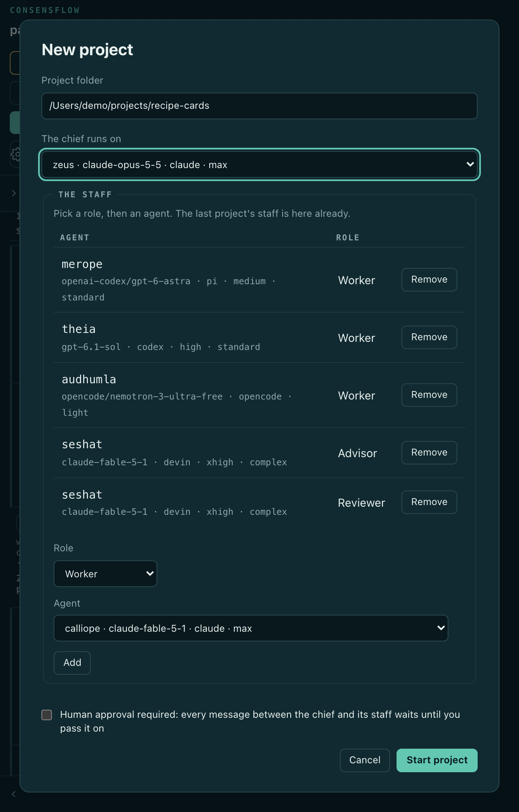

Run a team of
AI coding agents
on your project.
ConsensFlow is a desktop app. You talk to one agent, the Chief of Staff. It plans the work and puts tasks on a board, and the rest of your staff pick them up, each in a terminal of its own. Every result comes back to the board.
It works through the coding agents you already use, Claude Code, Codex, OpenCode, Pi and Devin, with your own logins. It stores no passwords and needs no API keys.
Mac with Apple silicon, macOS 13.5 or later. Windows 10 or 11, 64-bit. Free and open source under the MIT license.

How it works
Everything happens in one window: the board on the left, the agents' terminals on the right. A task moves across the board as the work moves.
- Backlog
- Queued
- Working
- Waiting
- Done
- Finished
-
- Backlog
You tell the chief what you want
In its terminal, in your own words. The chief breaks the goal into tasks, does what is its own, and puts the rest on the board.
-
- Queued
A member of the right tier takes it
The chief asks for the kind of member a task needs: critical, complex, standard or light. ConsensFlow gives the task to a free member of that tier.
-
- Working
It works in a terminal of its own
A fresh terminal of the member's harness, with your login. Open it from the member's row to watch it work, or send it an urgent word.
-
- Done
- Finished
The result comes back to the board
A reviewer can check it, and the chief accepts it. The window closes, and the task keeps everything its agent wrote.
What it does
The staff
- One chief, a whole staff
- Give the chief your goal in its terminal. It breaks the work into tasks, does what is its own, and hands the rest to the staff you picked for the project.
- Workers, advisors and reviewers
- Workers do the tasks. Advisors answer the chief's questions with findings. Reviewers check finished work. Advisors and reviewers never change a file.
- Work by tier, not by name
- The chief asks for the kind of member a task needs, and ConsensFlow gives the task to a free member of that tier. Work is shared across the staff.
- Switch the chief anytime
- Move the chief to another agent or harness. The new chief starts with a handoff: what is on the board, your last words, and the history of the chiefs before it.
The board
- A board you can read
- Each task shows who has it and where it stands, from backlog to done. Open a task to read its brief, its result, and everything its agent wrote.
- Each task in its own window
- A task opens a fresh terminal of its agent's harness, and the window closes when the work is done. Its conversation is kept, so a follow-up continues where it stopped.
- Plans with an order
- A task can wait for others to be accepted first, so a plan of many tasks runs in its own order, in parallel where it can.
You stay in charge
- Pause, resume and tell
- Stop any task and keep its window and work, or send an urgent word into a window mid-task.
- Quota-aware
- When an agent runs out of quota, its task waits for the reset or goes to another member of the same tier.
- Your approval, if you want it
- Turn on human approval for a project, and every message between agents waits for you to pass it on.


Works with Claude Code, Codex, OpenCode, Pi and Devin
ConsensFlow runs each agent through its harness's own command-line tool. Install the ones you want to use and sign in to each once in a terminal. You don't need all five: one is enough to start.
| Harness | Install |
|---|---|
| Claude Code | npm install -g @anthropic-ai/claude-code, or Anthropic's installer |
| Codex | npm install -g @openai/codex, or its own installer |
| OpenCode | npm install -g opencode-ai, or its own installer |
| Pi | npm install -g @earendil-works/pi-coding-agent, or its own installer |
| Devin | Devin's own CLI installer, version 3000.10.21 or later |
Settings → Harnesses shows which are installed, their versions, and whether ConsensFlow is set up for each. ConsensFlow prepares what it needs for a harness by itself, the first time one of its windows opens.
Settings → Agents lists ready-made agents, each a harness, a model and an effort, and lets you define your own with any model your harness accepts.

Install
Download the latest version from the releases on GitHub; for now every release is an alpha, marked Pre-release. Everything ConsensFlow needs comes with it. The only other things to install are the harnesses you want to use.
Mac
Apple silicon, macOS 13.5 or later
Download the .dmg, open it, and drag ConsensFlow to Applications. The app is signed and notarized by Apple, so it opens like any other app.
Updates. ConsensFlow checks for updates by itself, and you can check from ConsensFlow → Check for Updates… Updates install in the app.
Windows
Windows 10 or 11, 64-bit
- Installer: run
ConsensFlow_<version>_x64-setup.exe. - Portable:
ConsensFlow_<version>_x64-portable.exeis a single file you can run from anywhere, with nothing to install.
SmartScreen asks the first time you run it, because the app is not signed yet: choose More info → Run anyway.
Updates. Check for Updates tells you when a new version is out and opens its download page.
Getting started
- Install at least one harness and sign in to it.
- Open ConsensFlow and choose New project: pick the project's folder, the agent the chief runs on, and the staff.
- Tell the chief what you want, in its terminal.
- Watch the board. Open a task to read it, or open a member's terminal from its row to see it work.

Your data, and what the agents can do
- ConsensFlow keeps its data in
~/.consensflow(on Windows,%USERPROFILE%\.consensflow). - It never sees your passwords: each agent uses its own harness's login.
- Agents work with full permissions in their windows, as they would if you ran them yourself. Your protection is the review, the chief's acceptance and, if you turn it on, your approval. Use ConsensFlow on projects kept in version control.
- Every agent starts with its harness's MCP servers and connectors (your browser, your accounts, your IDE), the chief and its staff alike, as it would if you ran it yourself. The staff use them with full permissions while you aren't watching, so keep in a harness only the servers you would let any agent use.
Open source, MIT
ConsensFlow is free, and its source is on GitHub under the MIT license, with every release and its notes. Its engine is written in Rust.